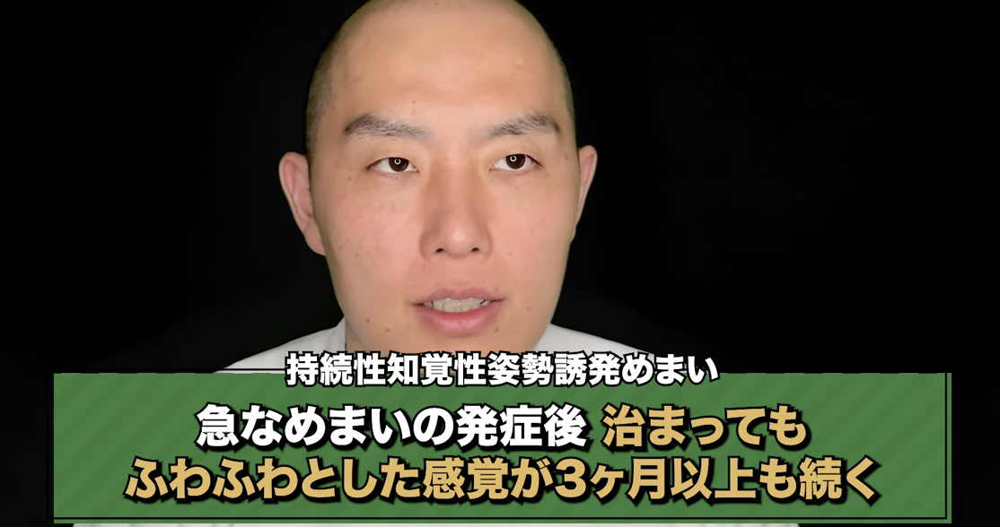
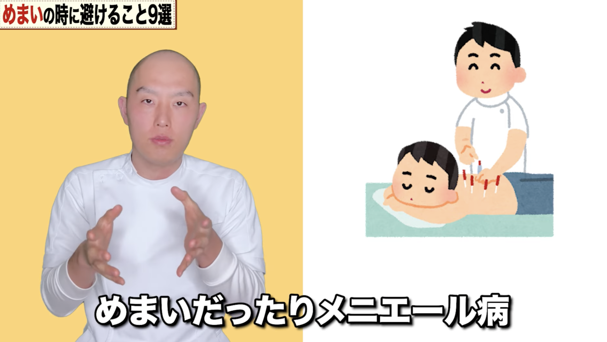
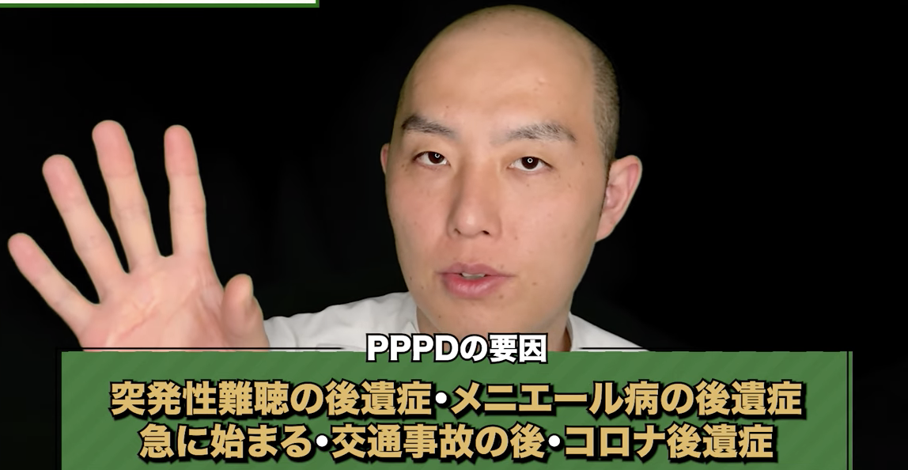
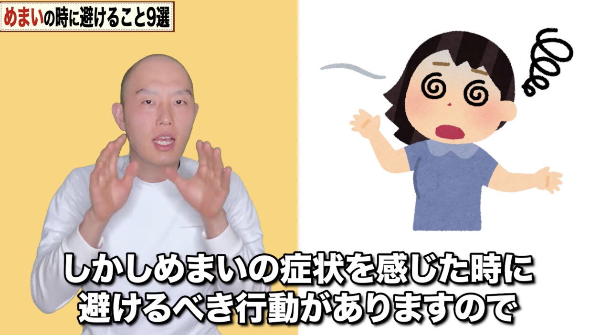
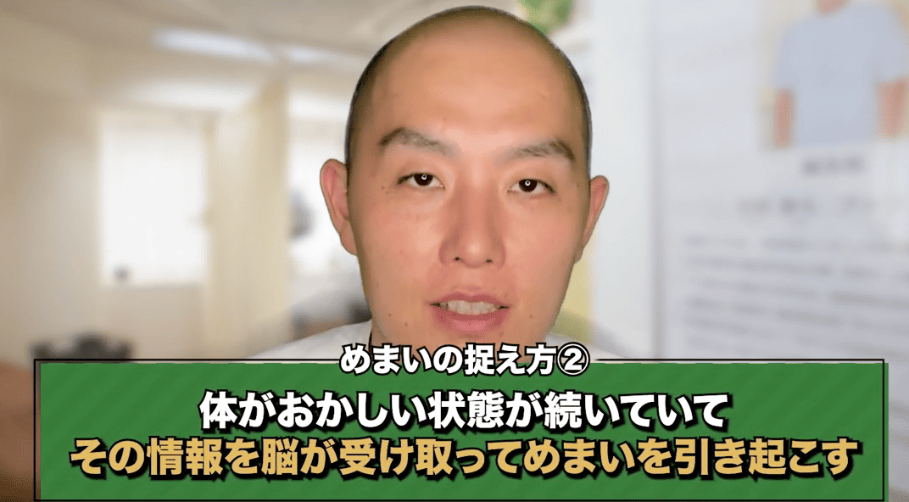
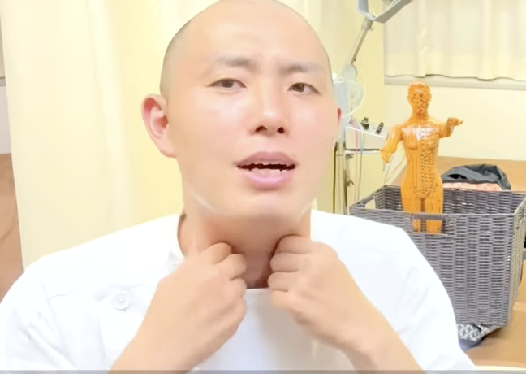

持続性知覚性姿勢誘発めまいの鍼灸
立位や視覚刺激で悪化する慢性的な浮遊感に対し、専門医の治療を前提に首周囲の緊張緩和と血流調整で心身を穏やかに整えます。
まず知っておきたい要点と施術方針
持続性知覚性姿勢誘発めまい（PPPD）は、前庭神経炎やメニエール病などの先行疾患や心理的ストレスを契機に発症する機能性めまいです。視覚情報や姿勢変化に対する脳の過敏状態が続くと考えられ、前庭リハビリテーションや薬物療法、認知行動療法などの標準治療が基本となります。首の深部にある後頭下筋群の過緊張や首・肩・腰・手首の可動性低下、血流の滞りも不調の背景に関与すると考えられています。（公式解説）
このようなお悩みはありませんか？
- ✓雲の上を歩くようなふわふわした浮遊感が3ヶ月以上続く
- ✓立っている時や歩いている時にふらつきが悪化する
- ✓人混みやスーパーの陳列棚・動く映像を見るとつらい
- ✓検査で異常がないと言われたがめまいが抜けない
当院の施術アプローチ
院長YouTube解説・関連動画
 ▶ YouTube
▶ YouTube【持続性知覚性姿勢誘発めまい】慢性めまい回復の解説
検査で異常が出にくい慢性めまい（PPPD）に対する鍼灸の回復アプローチを紹介している動画です。
動画を見る（YouTubeへ） →▶ 関連する院長YouTube動画をもっと見る（あと1本）▼

持続性知覚性姿勢誘発めまいは、新しく概念が定義された新しいめまい

持続性知覚性姿勢誘発めまいは、PPPDとも呼ばれているめまいで、2017年に新しい種類のめまいとして新たな概念が定義されました。PPPDは機能性の病気で臓器には何も異常がないが自覚症状のみ起こります。
持続性知覚性姿勢誘発めまいでは、急なめまいを発症した後、雲の上を歩いているようなふわふわとした感覚が３ヶ月以上続きます。
持続性知覚性姿勢誘発めまいでは、３ヶ月以上フラフラする感覚が続きます。立った時や歩く時、動くものや細かいものを見るとフラフラする感覚がひどくなるという特徴があり、メニエール病や突発性難聴などめまいの症状を起こす急性の病気が落ち着いた後に起こることも多いです。
耳鳴り、難聴がある人は、めまい症状を併発している人が非常に多いです。当院では、持続性知覚性姿勢誘発めまいで悩んでいる人は1日40人ほどの来院があります。
中でも、その１割の人がめまいやメニエール病、良性発作性頭位めまい症を発症しています。
持続性知覚性姿勢誘発めまいは、めまいを起こす病気と合わせて起こる

持続性知覚性姿勢誘発めまいは、めまいを起こす耳の病気や神経の病気、内科的な病気と合わせて起こることが多いです。さらに、心理的なストレスで起こるめまいや平衡障害が起こった後に起こることも多いです。
目眩を起こす耳の病気の代表的なものは前庭神経炎です。前庭神経炎が起こった後に起こることが多いと言われています。
心理的なストレスや平衡障害によるめまいが起こった後に起こることも多いため、うつや不安症の人にも起こることが多いと言われています。

・感覚統合の失敗
多感覚入力の処理異常：視覚、前庭系、体性感覚の間での情報の不適切な統合が、PPPDの発症に関係している可能性があります。
前庭系と中枢神経系の不適切な相互作用：バランス感覚を司る前庭系と脳の間の通信がうまくいかないことが、めまいやバランスの問題を引き起こす可能性があります。
・心理社会的要因
不安やストレス：PPPDの人は、不安障害やうつ病を持っていることが多く、これらの心理社会的要因が症状の発症や悪化に寄与することがあります。
適応障害：急性のめまいのエピソードの後、体が通常の感覚入力の処理に適応するのに失敗することが、PPPDの一因となる可能性があります。
・脳の機能変化
脳の処理機能の変化：前頭前野や小脳などのPPPDに関連する脳領域の活動パターンの変化が示唆されています。
神経可塑性の問題：神経系の適応能力に関連した問題も、PPPDの原因の一つとして考えられています。
・遺伝的要因
家族歴：PPPDや他の種類のめまいを経験した家族がいる場合、遺伝的要因が関与している可能性があります。
・環境要因
環境トリガー：強い光、動く画像、混雑した場所など、特定の環境要因がPPPDのトリガーとなることがあります。
持続性知覚性めまいの原因はわかっていません。症状ははっきりせず、精神的な病気ではなく機能性のめまいに該当します。
目から入る情報と体のバランスがうまく合わずに起こす病気で、自然に改善することがなく悪くなったり良くなったりを長期に繰り返します。鍼灸院でよく見る症状で、すぐ良くなる人が多いです。
当院では、後頭下筋群の緊張が原因であると考えています。首の奥の筋肉が固まることで起こる自律神経症状のため、目眩の薬や自律神経の薬を飲んでゆっくりするが一向に良くなりません。肉体的な疲労感を取っても改善せず、首の奥の筋肉が固まって起こる症状です。
持続性知覚性姿勢誘発めまいの特徴は3ヶ月以上症状が続くこと
持続性知覚性姿勢誘発めまいでは3ヶ月以上、ふわふわとした浮遊感や不安定感、非回転性のめまいの中で1つ以上の症状が続きます。この症状は、ほとんど毎日起こり、日常生活に大きな影響を与えます。
症状は、長い時間続き、症状の強さは強くなったり軽くなったりするという変化があります。
また、持続性知覚性姿勢誘発めまいには、他の症状があることもあります。当院ではふわふわ感がとれた後、手がほてるという症状が出ている人もいます。男女問わず起きる病気ですが、当院では女性の方が多いです。改善しているという錯覚を起こすこともあります。
- •立位姿勢になった（立った時や歩いた時の姿勢）時
- •身体を動かした時
- •視覚刺激があった時
〈身体を動かした時に症状が強くなる傾向の例〉
・エレベーターに乗った時
・乗馬体験をした時
・人ごみに押された時
〈視覚刺激があった時の例〉
・人混みや往来する車などの動いているものを見た時
・スーパーやコンビニで陳列棚を見た時
・コンピュータなどの複雑な視覚パターンを見た時
①ふわふわした感じ
②不安定
③回転しないめまい
以上３つのうち１つ以上の症状が３ヶ月以上にわたりほぼ毎日続きます。症状の強さに強弱があり1日の中でも時間が経つにつれどんどん症状が悪くなります。
立った姿勢など体勢により悪化します。目眩、浮遊感、不安定感もちろん内科的病気や心理的ストレスによる平衡障害が起きて発症すると言われています。
めまいは発作性、急性、慢性に分けられます。
発作性→メニエール、良性発作性頭位めまい症
急性→前庭神経
慢性→PPPD
④症状が顕著な頭痛、機能障害を起こしている
⑤症状が他の病気や障害でうまく説明できない
不安定感やふらつき：特に広い場所や人が多い場所、動いている物体を見る時などに、ふらつきやバランスを失う感覚が現れます。
立位時の不快感：立っている時に特に不安定さを感じ、座っている時や横になっている時は症状が軽減することがあります。
視覚的な刺激に対する過敏性：動く画像や強い光、パターンが密集した表面など視覚的な刺激に敏感になり、これらがめまいや不安定感を誘発することがあります。
集中困難：持続的な不安定感やめまいが原因で、日常生活や仕事、学業での集中が困難になることがあります。
疲労感：症状によって日常生活に支障が出ることから、疲労感を強く感じることがあります。
立ちくらみ：急に立ち上がった時にめまいを感じることがありますが、これはPPPDの症状とは異なり、起立性低血圧など他の原因によることもあります。
他にも、めまいや不安定感が原因で不安やうつ症状を発症したり、緊張型頭痛や偏頭痛を併発したりすることがあります。

持続性知覚性姿勢誘発めまいには、確立された改善方法は今のところありません。改善をするために重要なキーワードは、前庭リハビリと抗うつ薬、認知行動です。
前庭リハビリは、内部の感覚に対して刺激を与えてめまいへの順化を促す改善方法で、バランス感覚を改善するための特定のエクササイズを行います。この方法では、前庭系の機能を促進し、めまいや不安定感の軽減を目指します。
前庭リハビリでの改善は、効果を感じるまでに最低でも数ヶ月かかると考えることが必要です。安定した立位や歩行を促すためのトレーニングも併せて行います。
症状が一進一退する場合も多いということを理解し、改善を行うことが必要です。これは、前庭リハビリを行うことによってめまいを誘発させて症状が悪化するという可能性も考えられるためです。
認知行動を利用した改善方法は、バランスの良い適応的な考えを作って気持ちを楽にするという精神に対して働きかける改善方法です。めまいに対する恐怖や不安、避けがちな行動パターンを変えることを目指します。また、ストレス管理技術の向上にも役立ちます。
さらに、深呼吸、瞑想、筋弛緩法など、ストレスを軽減しリラックスを促進する技法も有効であることがあります。
持続性知覚性姿勢誘発めまいの人の中には、色々な病院に相談に行き自分の訴えが信じてもらえなかった失望と不信感を持っている人も多くいます。
持続性知覚性姿勢誘発めまいの改善を行うために必要なことは、信頼関係です。きちんと信頼できる医師を見つけることが大事になるのです。
持続性知覚性姿勢誘発めまいは、改善に取り組まなければ症状がよくなることはあまりありません。できるだけ早めに病院に相談に行き、信頼できる医師のもとで改善に取り組むことをお勧めします。
他にも、症状管理のための教育も役立つことがあります。自分自身で症状について理解し、日常生活での対処法を学ぶことが重要なのです。
さらに、同じ状態を持つ他の人々との交流も改善につながります。交流を通じて、経験を共有し、相互にサポートを提供することができます。
改善には、環境の調整も重要です。特に過度な視覚的刺激は症状の悪化につながるため、避けることで症状の悪化を防ぐことができます。
・抗不安薬
抗不安薬は、PPPDに伴う不安症状を管理するために使用されます。多くの場合、めまいや不安定感が不安やパニック発作を引き起こし、これがさらにめまいを悪化させるという悪循環に陥る場合に処方されます。抗不安薬は、このような不安のレベルを下げ、快適さを向上させることを目的としていますが依存性があるため、短期間の使用や医師の厳格な監督下での使用が推奨されます。
・抗うつ薬
セロトニン再取り込み阻害薬：抗うつ薬は、PPPDによって引き起こされるうつ病の症状や、うつ病がPPPDの症状を悪化させる場合に使用されるもので、セロトニン再取り込み阻害薬は不安症状を含む広範な症状に効果があるとされています。そのため、気分を改善し、生活の質を向上させるためにしばしば使用されます。抗うつ薬は、めまいやバランス障害に対して感受性を減少させることによって、症状の管理に役立つことがあります。
・ベタヒスチン
ベタヒスチンは、メニエール病やめまいの改善に一般的に用いられる薬物で、PPPDにおいても有効であると考えられています。ベタヒスチンは、内耳の血流を改善することにより前庭機能を正常化し、めまいの感覚を減少させるとされています。特に前庭系の異常が疑われる場合や、めまいの症状が顕著な場合に使用されることがあります。しかし、ベタヒスチンの効果は個人差が大きいため、改善方法の一環として慎重に検討されます。
・抗めまい薬
プロクロルペラジンやメクリジン：これらはめまいの感覚を減少させることができる薬物で、特に急性のめまいのエピソードに対して用いられます。長期的な使用は推奨されていませんが、短期間での症状のコントロールに役立つことがあります。
・ベンゾジアゼピン類
ディアゼパムやクロナゼパム：これらは短期間の使用に限定されることが多い抗不安薬で、急性の不安症状やパニック発作に対して有効です。めまいや不安定感を引き起こす過剰な神経活動を抑制する効果があります。ただし、依存性や耐性の発展のリスクがあるため、慎重な管理のもとで使用されます。
・抗精神病薬
クエチアピンやオランザピン：これらは主に精神病の改善に用いられますが、非常に低い用量で不安症状の管理に役立つことがあります。PPPDにおける過剰な不安やうつ病の症状に対して、他の方法が効果を示さない場合に考慮されることがあります。
・抗てんかん薬
ガバペンチンやプレガバリン：これらは本来てんかんの改善に用いられる薬物ですが、神経痛の改善や不安症状の管理にも有効であり、PPPDにおいても症状の緩和に役立つことが報告されています。
・ベータ遮断薬
プロプラノロール：これは心臓病や高血圧の改善に使われることが多い薬物ですが、手の震えや心拍数の増加などの物理的な症状に伴う不安を軽減する効果があります。PPPDにおける身体的症状による不安感の管理に有効な場合があります。
持続性知覚性姿勢誘発めまいの鍼灸

鍼灸師は鍼をするということは一緒ですが、理論や考え方、ゴール設定、勉強法、対応が全然違います。病院の先生は西洋医学の考え方のため筋肉や解剖レントゲン薬の処方、手術などある程度図式としてわかっていますが、鍼灸は1つの病気に対するやり方や理論が一人一人違うのです。
めまいは5種類あります。
- •回転性のめまい
- •ふわふわするめまい
- •横に揺れるめまい
- •特定の状況下でのめまい
- •走っている時のめまい
- •ものが大きく見えたり小さく見えたりするめまい です。
めまいでも人によって訴え方が違い発生する状況も違うのです。
当院では過去に耳の奥に約６cmの鍼を入れて三半規管に届かせるという施術を数年間していたことがあります。この方法でたくさんの人が悪化してしまい悩んだことがあります。
その時池見酉次郎先生の「心療内科」という本を読みました。その中で自分の利用者様を家に招待して一緒に過ごしながら原因を探っていくという話がありました。ずっと首が右を向いていて家族の話をした時だけ前を向くという方がいて、一緒に過ごす中で母親との関係や家庭内のトラブルを解消したら前を向けるようになって解消したという話が書かれていました。
その本を読んでめまいで悩んでいる人に三半規管や脳の血流へのアプローチを行ってきましたが、なかなか改善しないのは体が問題ではないのではないかと思うようになりました。めまいは脳がトラウマなどから逃げるために脳自身がめまい感という症状を作り出していると考えたのです。その考え方でも改善せず悩みながら施術を続ける中で、なかなか改善しない人にはみんな共通してある特徴があることがわかりました。
それはみんな共通して体がボロボロであるということです。具体的にいうと血流循環やリンパ還流、関節の正常な可動性を失っている人が多いのです。
脳が興奮して脳がめまいを作り出していることは分かっていましたが、作り出す理由がトラウマやマイナス思考ではなく、体がおかしい状態が続いていてその情報を脳が受け取ってめまいを引き起こしていると捉えるようになりました。そして、その体の問題がとる施術を行ったらめまいの症状が楽になったのです。
当院の鍼灸でのめまいの改善方法は、脳をどれだけ安定させられるかを複数の要点から考えて内蔵の要素を全て取り除くことで楽になることを目の当たりにして完成したものなのです。
鍼灸は悩んでいる方や施術者によって行っていることやっていることが変わる方法です。当院の院長は、脳が作り出した症状をいろんな観点で改善していければ良いという考え方で施術を行っています。
人によって調べた内容や信じているもの、やってきたもので考え方や理論、解釈が変わるため、調べない人は理論が停滞していきます。難しい症状の方がいた時改善しないと突っぱねてしまうと自分の成長も得られません。
めまいは三半規管、前庭神経から起きる症状です。PPPDは脳からくる脳が興奮して眩暈を作り出してしまう症状です。そのため、脳が作り出す状況を変えなければいけないのです。
体が全て整えば症状はゆっくり落ち着いていくと考えています。
ただし、落ち着く速度は人によって違うため、体が整ってきたらどんどん施術の間隔を開けてゆっくり鎮まっていくように仕向ける必要があります。改善するまでどんどん通いなさいという鍼灸院もありますが、当院は施術の間隔をどんどん開けていかないとPPPDは鎮りにくいと考えています。
🎥 他のYouTube切り抜き・解説を読む（あと3件）▼
持続性知覚性姿勢誘発めまいのセルフケア

①人差し指と親指で首の前側を引っ張る（浅頚部リンパ節へのアプローチ）
首の前の環境をよくしないと後ろは解れないため、まず前の部分を解します。
②４本指で首の横を撫でる（上深頚リンパ節へのアプローチ）
ぐりぐり押すのは良くないため、優しく撫でることが大事です。
※首のリンパにはあらゆるところが通っています。そのため、解してもすぐに詰まってしまいます。首の前と横は徹底的に解しましょう。
③４本指で首の後ろをさする（後頭下筋へのアプローチ）
この時、表面上しかさすっていないと思うかもしれませんが、きちんと行いましょう。後頭下筋は、４cm以上下の深いところにあります。そのため理論上は押しても、前の板状筋や僧帽筋が壁になって届きません。優しく撫でて長期的な目線でアプローチを行うことが大事です。
上記のアプローチ方法を２週間続けると体が変わります。
当院では、後頭下筋へのアプローチや脳の興奮、体の軸ずれなどのサインを取ることで改善を行なっており、比較的すぐ改善が見られます。
運動をすることもお勧めしていますが、ふわふわするため運動をしにくいことも多いです。まずはセルフケアから行いましょう。
ふわふわめまい症状について
ふわふわめまいは浮動性めまいや船上めまい、浮遊めまいなどともいう症状で、鍼灸院ではあるあるの症状です。
特徴は、雲の上を歩いているような不安定な感覚、地に足がつかないようなふわふわした感覚です。回転性のめまいとは異なり目が周るような強い回転ではなく、体全体が浮くような不安定なものが中心です。
原因は、耳の内耳障害や脳の血流不足、自律神経の乱れなどです。耳の内耳などの耳の奥の方の器官は体のバランスを保つためには重要な器官であり、内耳に障害があると、体の動きや位置の情報が脳にうまく伝わらなくなり結果としてふわふわとしためまいが生じます。
脳に十分な血流が送れない場合もふわふわ感を出すことがあります。低血圧、自律神経の乱れ、過度なストレスも結果としてふわふわ感を出すことがあります。
一方でめまいの発生は心理的な要因とも関連しています。不安やストレス、疲労感が重なることで自律神経のバランスが崩れ、めまいを引き起こすことも少なくありません。浮遊感のめまいは単なる体の不調だけではなく心と体の複合的な問題とされているのです。
ふわふわめまいの原因を特定するためには正確に調べることが必要です。
1.カウンセリング
カウンセリングは体の状態や日常生活における影響を探る重要なステップです。性質、発生時期、持続時間、頻度、発生時の特定状況、吐き気や耳鳴りなどの随伴症状という情報を伝えることで原因が特定しやすくなります。耳が原因の場合と脳が原因の場合では発生するめまいの性質や症状が異なることが多いため、この情報は非常に重要になります。
2.眼振
めまいの異常は目の動きに敏感に現れることがあります。特殊な赤外線カメラ付きの眼鏡を装着し目の動きを観察します。眼振があるかどうかや動き方によって、内耳の問題なのか神経の異常興奮なのかを確認します。
3.聴力
原因の約80%は耳に関係するとされています。気導や骨伝導を調べて内耳や中耳機能の異常の有無を確認します。メニエール病などの内耳の病気の場合は聴力の低下がめまいと一緒に起きることがあるため、聴力を調べることでめまいの原因が絞ることができることもあります。
4.平衡感覚機能
平衡感覚機能を調べる方法はいくつかの種類があり、体のふらつき具合やバランスを評価します。バランスボードで体のふらつき具合を測定し重心動揺を調べたり目を閉じた状態で姿勢の安定性を調べたりして、平衡感覚に異常があるのかを確認し、原因になっている部分を特定します。
5.画像
内耳や脳に異常がある場合はCTやMRIで脳や内耳の状態を確認して腫瘍や脳梗塞などの重要な原因を探ります。脳の血流障害や小さな脳血管障害、脳梗塞などが疑われる場合は画像を確認することは非常に重要です。
・耳鼻科
めまいの原因の多くは耳に関与していることが多いため最初に耳鼻咽喉科に行くのが一般的です。内耳の状態を調べて耳に関連するめまいか浮動性かを判断します。メニエール病や良性発作性頭位めまい症など内耳の異常が原因の場合、耳鼻科にいくことが必要です。
全身の病気や自律神経のバランスが関与している可能性もあるため内科医の判断も必要です。
・脳神経外科、脳神経内科
手足が動かしにくい、話しにくい、物が二重に見える、真っ直ぐ歩けないなどの神経症状の発症時には脳神経外科や脳神経内科にいきましょう。
※脳の血流障害や神経の異常の場合は耳鼻科の薬を飲んだり内科医に相談したりしても意味がありません。ふわふわめまいと一緒に色々な症状を抱えている場合はすぐ脳神経内科にいきましょう。
鍼灸での改善の仕方や通うペース
持続性知覚性姿勢誘発めまいについて当院では、脳の異常興奮や脳の領域の問題であると解釈をしています。
しかし、めまいは非常に複雑なため、脳からくるのか三半規管の問題なのか別の要因があるのかなど色々なケースがあります。要因に、インフルエンザやコロナ、交通事故などが関わっていることもあれば特に何もないこともあります。
この症状は体の状態を正常にすることが大事なため、当院では体の変化を見て改善を進めていきます。改善を行う上で意識していることは、色々な観点で全て行うということで、体に存在する悪いサインを全て潰していきます。
この症状は、交通事故などで脳のエリア損傷をしている場合、回復はしずらいですが、脳が正常であれば改善しやすい症状です。
持続性知覚性姿勢誘発めまいは大体の人が同じ改善の仕方をします。通うペースとしては週1回2ヶ月間通っていただくことを推奨しており、基本的には8回以内に効果を感じていただいていますが、状態によってもう少しかかることもあります。
この症状は、体の状態を正常にすることが大事で、正常になれば施術の間隔を空けなければいけないという特徴もあります。
2回ほどの施術では症状が変わっている感覚はなくても良くなっていきます。大体この時点で体の状態が70%くらいまでになります。
5回ほどの施術でふわふわしている感覚の幅が狭くなったように感じることが多いです。これは体ができあがってきたサインで、だんだんと揺れるシュチュエーションが少なくなってきます。この時点での体の状態は95%です。
8回ほどの施術で、陳列棚を見ても気持ち悪くなることが少なくなり、ふわふわ感もある日とない日がはっきりしてきます。ここまでくると体は100%出来上がっており非常に良い経過と言えます。
鍼灸は体を刺激して改善していく方法のため、施術の後めまいが強くなることもありますが、経過が順調な場合、2週間に1回など来院のペースを提案させていただきます。
その後の施術で体が楽になってきたと感じるようになると、来院を3週間〜1ヶ月に1度のペースにします。徐々に揺れるシチュエーションが少なくなってきたり揺れていることが気にならなくなってきたりして、良くなったと感じていただけるようになります。
症状が軽い場合はもう少し早く改善することもありますが、多くの方は上記のような改善の仕方をしています。
鍼灸は、体を変化させてよくしていく改善方法です。変化させる際に悪化することもあるため、リスクを避けるためにもこの症状は大丈夫だと思ったらどんどん間隔をあけて改善を行なっています。
当院では現在も10名以上の方が持続性知覚性姿勢誘発めまいで通われています。
持続性知覚性姿勢誘発めまいに悩まれていたKさんのケース
Q.めまいの症状が現れた時どんな体調の変化を感じましたか？
A.数日経っても改善しない頭痛と苦痛感、寒気のようなざわざわとする感覚が数日続いて突然めまいが起きました。
Q.頭痛が始める前までも頭痛は良く感じていましたか？
A.たまにありましたが、四六時中1日改善しないことはなく、寒気を感じることもありませんでした。外出できないくらいの頭痛でした。
Q.頭痛はどのあたりに感じましたか？
A.こめかみの辺りで頭痛が起こっていましたが締め付け感は頭全体でした。
Q.その時は病院などには行きましたか？
A.めまいが始まってからはどこにも行けない状態で寝込んでいる感じでしたが、その後病院に行きました。寝ながら調べると顎が悪いなども出てきたため、歯科、眼科、脳神経外科、整体にも行きました。その場所を目指すことが精一杯でした。
Q.これは普通ではないと感じたのはどんな場面でしたか？
A.めまいに続いてアレルギー症状が出てきました。手足のソワソワ感や強い冷えが起こりました。頭痛もこめかみや後頭部、目の奥に移動しました。筋肉が強く痙攣することもあり、まともではないと思いました。
Q.発症した時は生活習慣やストレスが関係あると思う点はありましたか？
A.病院でも精神的なものではないかなどいろいろ言われましたが、特に何も変化などはなく平穏に過ごしていました。環境の変化もなくストレスと言われてもピンと来ませんでした。変化があったといえば、２〜3年ずっと整体や整骨院、気功や足ツボに通っていた程度です。
Q.整体、足ツボ、気功に行こうと思ったきっかけは体調を崩していたからですか？
A.少し前から片頭痛というほどのものではないが頭痛がたまにあり、首や肩の凝りもひどくて病院に行きました。
Q.めまいを初めて感じた時にどんな感情になりましたか？
A.すごく恐怖や不安がありました。動悸のようなものがあり雲の上を歩いているような突きあげられる感覚で、本当に不安でした。
Q.体調を崩した時は誰かに相談しましたか？
A.家族に相談しました。母に言うと最初はスマホのやりすぎと言われましたが１〜２週間経っても改善しないことを説明して一緒に病院に行ってもらいました。
Q.その時は一人でも歩けましたか？
A.実際にめまいがして倒れるとかではないため普通に歩行している人に見えたと思いますが、できれば外出は避けたかったです。
Q.脳神経外科ではどのような判断をされましたか？
A.顎関節症から来る目眩や精神的なものと病院で言われました。整体では姿勢やストレートネック、血流が悪い、腸が詰まっているなどと言われました。
Q.発症当初どのようなことが1番辛かったですか？
A.当たり前の日常生活を全く送れなくなってしまうことが辛かったです。人と話すのも辛く、相槌を打っている相手の首の動きだけでもめまいがしてくるのが辛かったです。美容室にも行けなくなりました。
Q.PPPDの判断までかかった時間はどのくらいですか？
A.3ヶ月です。
Q.実際に病院の先生から判断を受けたのですか？
A.誰もそういう判断をすることはありませんでした。PPPDかもしれないということは自分で調べて院長のYouTubeで見ました。それまではPPPDを知らなかったためただのめまいだと思っていました。
Q.改善方法としてはどのようなことをしましたか？
A.CTや目の眼圧、眼振を調べました。薬や漢方も出されましたが、目からくるめまいでも脳からくるめまいでもないため気休めにしかならないと言われて薬をもらったため飲みませんでした。
Q.なかなか回復せず色々な施術を受けたと思いますが整体はどのように探しましたか？
A.YouTubeで動画を見るのも辛かったですが必死に動画の施術を見ていきました。場所が遠く片道2時間くらいかけていきました。行く時が激痛すぎて耐えれられませんでした。
Q.当院のYouTubeを知ったきっかけは何ですか？
A.嗅覚障害の動画を見たことがあったため、ふと頭によぎってもう1度動画を見たら自分に当てはまるものがたくさん出てきて自分にしっくりきました。
Q.最初に来院した時PPPDかもしれないと話しましたが、聞いた時どう思いましたか？
A.私の場合は動画を見ていたのでやはりそうだったと少し安心しました。
Q.当院に来院されるまで鍼灸の施術の経験はありましたか？
A.1度だけありましたが、すごく印象が悪くて嫌だと思いが強くありました。そこは1回目は18000円だったが何回かで10万円分の回数券をその方が安いのでと買わされました。街によくある看板の鍼灸院でした。
Q.鍼は痛くなかったですか？
A.全く痛くありませんでした。
Q.1回目の施術をした後の感覚はどうでしたか？
A.通い出したという充実感と安心感がありました。今までと違う納得できるところに通うことができたという喜びの方が大きかったです。
Q.どのようなところで良くなってきたと実感しましたか？
A.外に出ようと思えるようになってきたことです。自分の好きなインテリアや洋服などを見たいという気持ちになった時に良くなってきたと思いました。ただ、その時もめまいは感じていました。
Q.その時のレベルは1番ひどい時が10としたらどのレベルでしたか？
A.5以下です。
Q.Kさんの施術では色々な症状が施術することでどんどん取れていったことが印象的だったのですが、その時にはどんな感情を感じましたか？
A.不安でいっぱいだったところが少しずつ剥がれていくような感覚でした。目の筋肉のピクピクが止まってすごく嬉しかったです。多少戻ったりもしていて繰り返して相談していましたが、返信をいただいて大丈夫だと安心できました。
Q.その時肌の痒みがありこの痒みがなくなったら症状はもっとよくなるという話をしましたが、説明を受けた時にはどのように思っていましたか？
A.正直にいうと別物だと思っていました。元々アトピー体質ではあり最近悪化していると思っていましたが、初めは半信半疑でした。今はほとんど痒くないです。
Q.回復する中で最も励みになったことやモチベーションはありましたか？
A.施術に行くこと自体がモチベーションでした。また、そう前先生の返信がモチベーションになりました。家族の支えもあり、母はプラス思考で励ましてくれたり手伝ってくれたりして理解してくれたのは良かったです。
Q.めまいの感覚は最近はどうですか？
A.最近は0の日も多いです。たまに1〜2の日もありますが、日常生活にそんなに支障はありません。
Q.当院に通い始めたのはいつ頃ですか？
A.2023年の11月です。施術をスタートして4〜5ヶ月くらいでだいぶ実感して楽になりました。今はメンテナンスで月に1回通っています。
Q.めまいの症状が再発する不安感はありますか？
A.少し前に風邪を引いた時にめまいが復活した期間がありましたが、徐々に1週間から10日くらいで落ち着いたため今はそこまで心配していません。
Q.症状が回復した今、日常生活で気をつけている習慣はなんですか？
A.強いストレッチやヨガを避けることです。また楽観的になり、あまり考えすぎないようにすることも気をつけています。
Q.症状が起きる前と起きた後で変わったことはありますか？
A.普通でいられることはありがたいことであると思い、家族により感謝するようになりました。
A.同じ症状で悩む人に伝えたいメッセージやアドバイスはありますか？
A.症状が辛くて通うまでが大変だと思いますが、効かないかもしれない薬を飲んだり自分が拒否反応を感じる施術を続けたりするのはあまりよくないと思います。
Q.回復するまでの過程でもっと早く知りたかったと後悔していることはありますか？
A.強い刺激があまり体に良くないことを知らなかったため自分で家でも必死になってぐいぐい指圧して押していたので、体にはそんなに強い刺激を与えてはいけないということは知っておけば良かったと思います。鍼灸院や整体の見る箇所や清潔感や料金などについても事前に知識があればおかしいことにも気がつけたと思っています。銀座そうぜん鍼灸院に通った時、雰囲気がすごくよく清潔感があって良いと思いました。真剣に迎えてくれている感覚が伝わりました。
Q.めまいを回復するまでにかかった時間は自分的に短かったですか？長かったですか？
A.長かったです。魔法みたいによくならないこともわかりましたし、個人差がすごくあることもわかりました。ただ、施術を受けている過程で確実によくなっているとは思いました。
Q.現在の健康状態を維持するために運動やセルフケアは行っていますか？
A.動けるようになったので、少し運動をしたりハイキングや散歩をしたりエアロバイクに乗ったりしています。今の状態なら旅行もできそうです。
Q.銀座そうぜん鍼灸院に行こうか迷っている人にアドバイスはありますか？
A.通うまで調べたり動画を見たりする中で鍼は痛いなどいいことばかり書いてあるわけではありません。しかし、実際私が行った印象はすごく明るくて清潔感もありました。受付の人も優しくて真剣に話を聞いてくれて返信も早かったですし、鍼も痛みも感じませんでした。悩んでいるなら一度通ってみたら良いと思います。
地面がぐわぐわ動くのがPPPDの特徴的なめまいです。原因がわからないため病院の先生もどう対応していいかわからない症状のため、処方した薬も効くか効かないわからないというのもその通りだと思います。
Kさんもすぐ改善することができれば良かったですが、PPPDの改善の仕方が特徴的なので4〜5ヶ月かかってしまいました。ただ施術を重ねていく中で、Kさんの首と腰が整っていき、めまいが落ち着いてきたので、施術する側としては体はよくなっていることは感じていました。
Kさんは色々な症状を抱えており、肌の痒みもあったため、この痒みがなくなったら症状はもっとよくなるという説明をしました。肌の痒みや目のピクピク、ふわふわめまいが全て一緒のところから来ているため改善をしていくという施術方針だったため、あまり理解できなかったと思いますが、実際肌の痒みがなくなっていく中で症状も軽くなったと思います。
めまいの症状が復活した時、Kさんに何度もまたすぐ良い方に戻るというコメントをしていましたが、案の定よくなって良かったと思います。PPPDは安定してしまうと一時的なぶり返しがあっても必ずまた落ち着いていきます。最初のようなレベルになることはほとんど考えられない症状ではありますが、これもKさんがよくなったから言えることでもあります。
Kさんが現在強いストレッチやヨガなどを避けてくださっているとのことですが、Kさんは体が刺激に対してクリアに感じやすいタイプであったため、刺激の選択は人よりも慎重にされていることは素晴らしいです。
施術が合わなくても必死な時は藁をもすがる思いでその施術に耐えると思いますが、体がそんなに拒否しているのはよくないです。その先生も悪い先生ではなく頑張っている気持ちも感じられると思いますが、よくならないと辛いと思います。PPPDで悩んでいる方は1度当院に相談にいらしてください。
左脳の脳梗塞による慢性めまいのAさんのケース
左脳の脳梗塞による慢性めまい。
・施術方法
・来院のきっかけ
上を向いたらふらっとする、下を向いたらぐらっとするという細かい症状があった。細かい症状はどんどん楽になっていったが、歩行時のふらふらだけが改善せず銀座そうぜん鍼灸院を見つけて来院した。
院長の気功施術は、何もないところと気持ち悪いところを見極めることから始めます。気功には具体的箇所への学術的アプローチと気持ち悪いところに行う感覚的アプローチがありますが、院長の施術は擦り合わせて行う方法で行っています。
指から何か出しているというよりは手で組んで当てているイメージです。
施術後、Aさんは最初右側だけ傾いた状態で痛かったですが良くなった、違和感もだいぶなくなったとの感想をいただきました。
Aさんは首をこの角度にしたら力が抜けるというポイントがあるそうです。これは前庭神経が関与していると考えられます。前庭神経が三半規管よりのため、首の角度によってはめまいが起こるのです。
めまいのある人は、やってはいけないことを行ない悪化して来院する人が多いです。
めまいの症状を感じた時には避けるべき行動があります。ここでは、その避けるべき行動９つを説明します。
① 首のストレッチ
頭の急な動きや許容範囲を超えた動かし方は避けましょう。首の大きなストレッチにより、内耳の圧力が変動し、めまい症状が悪化することがあります。
めまいは内リンパ浮腫とも言われ、耳の奥の内耳が浮腫んで起きている症状です。首をぐりぐり動かすと内耳の中の三半規管がより動いてしまうため、めまいがひどくなってしまいます。
② ストレスを溜めない
精神的ストレスや肉体的ストレスもそうですが、ストレスを溜め込んでしまうと症状が悪化しやすいです。ストレスがかかると体がストレスに対抗しようとして交感神経という自律神経が高まります。
交感神経が高まることで体の毛細血管がぎゅっと収縮してしまうため、耳の奥に走る迷路動脈も細くなり、メニエール病の原因である内リンパ浮腫が起こります。内耳が浮腫んでいるため、循環が悪くなると改善しにくくなってしまうのです。
瞑想、運動、リラックスなどストレスのコントロールを行いましょう。
③ 大量の水分を短時間で摂取すること
短時間で大量の水分を摂取すると、体内の水分バランスが崩れ、眩暈が起こりやすくなります。めまいは内リンパの浮腫で起こりやすくなるため、極端な水分摂取は控えましょう。
④ チーズや赤ワイン、チョコレート、ソーセージなどの加工肉の摂りすぎ
塩分と砂糖の取りすぎを控えることが大事です。塩分と砂糖の摂取量が増えると体はどんどん酸性になります。
人間の体は本来弱酸性のため、酸性に傾くと、水分をとって希釈しなければいけなくなり、どんどん水を溜め込もうとするようになります。
しょっぱいものや甘いものを食べると水が欲しくなりますが、水を摂取しすぎると浮腫が起き、耳の中も浮腫んでしまい、眩暈症状がひどくなるのです。そのため、水分の摂取量には注意が必要です。
⑤ 喫煙とカフェイン
喫煙をしたりカフェインを多量に摂ってしまったりすると、耳の中の血管が収縮してしまいます。できれば摂り過ぎはやめましょう。
⑥ 長時間のデスクワーク
長時間のデスクワークは眼精疲労を起こし、眩暈症状が強くなることにもつながります。めまい症状がひどくなるのは、長時間デスクワークをすると首の前側の筋肉が貼らざるを得なくなるためです。
首の水分循環は全部顔から首の前側を通って流れているため、首の前側が硬くなるとどんどん浮腫んできます。メニエール病で悩んでいる人はわかると思いますが、パソコンをするとふわふわしてきます。
人によっても症状は違いますが、デスクワークなどで目を使いすぎると、めまいの原因になるため首の前側はしっかり緩めることが大事です。デスクワークをし過ぎたときは首の前側は必ずほぐしましょう。
長時間パソコン作業をすると首の後ろ側も凝ってきやすいです。内耳に栄養などの循環をよくする迷路動脈という血管があり、その血管の本流は椎骨動脈という血管です。
椎骨動脈という血管は首の後ろを通っているため首の後ろも緩める必要があるのです。首の前と後ろの筋肉を定期的にほぐすことで目眩も改善しやすく、ひどくなりにくいです。
⑦ 過度な運動
スポーツ好きな方に多いのですが、循環が悪いために一生懸命運動してしまう人がいます。しかし、運動により三半規管が刺激されて眩暈が悪化することがあります。
めまいは耳の中の水分バランスで浮腫んでいるために起きてしまう症状ではありますが、無理に運動するよりは有酸素運動のような優しい負荷の方が経過は良いです。軽い運動に止めておくことが大事で、理想はウォーキングやランニングです。
⑧ 騒音の多い環境
大きい音は内耳に影響を与えます。結果的に三半規管にも影響を与えるため、パチンコやカラオケのような大きい音がなる場所はなるべく避けましょう。
⑨ 睡眠不足
睡眠不足を避けて規則正しい睡眠リズムを作ることが大事です。体は睡眠中に変化していきます。変化する割合が少なかったり変化する時間が短かったりすると、良い方向に向かっていきません。
睡眠の時間と量は必ず意識しましょう。夕食は腹７分目にとどめておき睡眠の3時間前にとり、できれば静かな場所で7時間睡眠を心がけましょう。
９つのポイントに注意し、症状を管理することで症状の悪化を防ぐことができ、うまくいけば自分で改善することができます。
日々の小さな努力がより良い生活の第一歩になるのです。
自律神経のお悩みのツボ図解とセルフケア
実際の施術ではお一人おひとりの体質・症状に合わせて選穴しますが、自律神経調整（心拍変動HRV・迷走神経・睡眠/ストレスケア）の臨床でよく用いられる代表的なツボの目安です。

📌 代表的なツボの詳細一覧表を開く（6穴） ▼
| ツボ名 | 位置の目安 | 主な狙い | セルフケアの注意点 |
|---|---|---|---|
| 曲池（きょくち） | 肘を曲げた外側のシワ先端 | 交感神経の過緊張リセット、上肢・頭部の熱感緩和 | 痛気持ちいい強さで10秒ほど。しびれが出たら弱める |
| 風池（ふうち） | 後頭骨下縁、耳後ろの骨の内側くぼみ | 頸部筋緊張・頭痛・めまい・眼精疲労の自律神経ケア | 頸動脈側へずらさず斜め内側へ優しく |
| 内関（ないかん） | 手首内側横ジワから肘側へ指3本分、2腱の間 | 動悸・息苦しさ・吐き気・胃腸不調の緩和 | 衣類の上からのカイロ温熱や軽い指圧が安全 |
| 百会（ひゃくえ） | 両耳上端を結ぶ線と正中線の交点 | 頭重感・不眠・精神的緊張・のぼせの調整 | 中指腹で心地よく数秒。頭痛増悪時は中止 |
| 角孫（かくそん） | 耳を前に折ったとき先端が側頭部に当たる位置 | 側頭部の循環改善、締め付け頭痛・だるさ緩和 | 吐く息に合わせじわっと圧迫（強揉み回避） |
| 三陰交（さんいんこう） | 内くるぶし頂点から指4本分上、すね骨の後ろ際 | 冷え・ホルモンバランス・睡眠の質改善 | 妊娠中の強い刺激・お灸は禁忌 |
国際査読論文の科学的エビデンス
国際的な医学データベース（PubMed・Cochrane等）で報告されている自律神経調整（心拍変動HRV・迷走神経・睡眠/ストレスケア）領域の代表的な査読済み鍼灸研究をまとめています（標準治療との併用や研究上の限界を含めて正確に掲載）。
📚 査読論文データ・PubMed出典リンクを開く（4件） ▼
| 年・研究デザイン | 対象・規模 | 主な結果 | 限界・出典 |
|---|---|---|---|
| 2025年 メタ解析 | 自律神経不調を伴う疾患 10 RCTs（n=744） | 全体適応力指標SDNNが有意改善（MD 13.59, p=0.0091）、重篤な有害事象ゼロ。 | LF・HF・LF/HFは有意差なし、異質性高。 Front Neurosci (PMID: 41230507) |
| 2023年 メタ解析 | 手技鍼 vs シャム鍼 9 RCTs | 実鍼群でのみ施術前後の副交感神経指標HFおよびLF/HF比が有意変化。 | 一次研究の質・異質性にばらつきあり。 Complement Ther Med (PMID: 36494036) |
| 2024年 RCT | 食後愁訴症候群（PDS）解析51名 | 症状反応率（p=0.001）、迷走神経活性HF上昇（p≤0.001）、LF/HF低下（p≤0.001）。 | 単施設・小規模（脳腸相関の根拠）。 Chin Med (PMID: 39568071) |
| 2022年 国内RCT | 更年期女性 48名（日本式鍼7穴×4週） | 鍼群の79%で心拍数が5%以上低下（P<0.01）、鍼中のHF上昇・起立時LF/HF低下を確認。 | 更年期女性限定・4週間の短期評価。 Med Acupunct (PMID: 36311889) |
参考文献・出典
- 銀座そうぜん鍼灸院「持続性知覚性姿勢誘発めまいの公式解説ページ」
- 2025年 メタ解析（自律神経不調を伴う疾患 10 RCTs（n=744））— Front Neurosci (PMID: 41230507)
- 2023年 メタ解析（手技鍼 vs シャム鍼 9 RCTs）— Complement Ther Med (PMID: 36494036)
- 2024年 RCT（食後愁訴症候群（PDS）解析51名）— Chin Med (PMID: 39568071)
- 2022年 国内RCT（更年期女性 48名（日本式鍼7穴×4週））— Med Acupunct (PMID: 36311889)
よくある質問（FAQ）
Q. 強い回転性めまいや吐き気がある急性期でも施術を受けられますか？▼
Q. 病院の前庭リハビリや服薬と併用できますか？▼
あわせて読まれる関連疾患（自律神経のお悩み）
入眠困難や中途覚醒などが続き日中の不調を招く状態です。自律神経の過緊張を鎮め、心身が休息しやすい環境を補完的に整えます。
昼食時に一人になることへの強い不安や対人プレッシャーで心身が緊張する状態。必要に応じた相談と並行し、膻中等で自律神経を整えます。
身近な人との情緒的な共感の乏しさと周囲の無理解から心身が疲弊する状態。心理支援と並行し、百会・期門等で自律神経と倦怠感を整えます。
抗うつ薬等の影響で脳内セロトニンが過剰になり発症する急性薬物障害。救急医療が絶対最優先で急性期は鍼灸対象外です。
子どもの独立により役割喪失感や抑うつ・身体不調が生じる状態。専門相談と並行し、大敦等で自律神経と倦怠感を穏やかに整えます。
夫（またはパートナー）の言動への慢性ストレスから心身に不調が出る状態。適切な距離感づくりと自律神経ケアで心身の負担を和らげます。
おひとりで悩まず、まずはご相談ください
銀座本院・川口・大宮・横浜・博多・田無の各院でご予約を承っております。